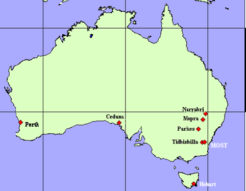

The Australian Long Baseline Array (LBA) is a radio-wavelength VLBI (Very Long Baseline Interferometry) network of telescopes, comprising a flexible (user-requested) subset of the antennas at ATCA (Australia Telescope Compact Array), Parkes, Mopra, Hobart, Ceduna and Tidbinbilla. The LBA also operates in global-VLBI mode, whereby a subset (or all) of the Australian antennas are used in conjunction typically with those in South Africa (Hartebeesthoek) and China. The LBA is operated by the Australia Telecope National Facility (ATNF), a branch of CSIRO (the Commonwealth Scientific and Research Organization), which also operates the ATCA, Mopra and Parkes observatories. The Hobart and Ceduna telescopes are operated by the University of Tasmania, while the Tidbinbilla dish is one of the NASA Deep Space Network tracking stations.

Credit: © Tasso Tzioumis, ATNF
The main difference between a VLBI instrument and a connected-element array such as the ATCA is that correlation, or the combining of signals from each pair of antennas, occurs offline in the former and in real time in the latter. This is because the typical distances between antennas in VLBI networks are such that physically connecting them is impractical/impossible. Instead, the data are recorded separately at each antenna and shipped for correlation. The LBA’s data correlation currently occurs at Swinburne University.